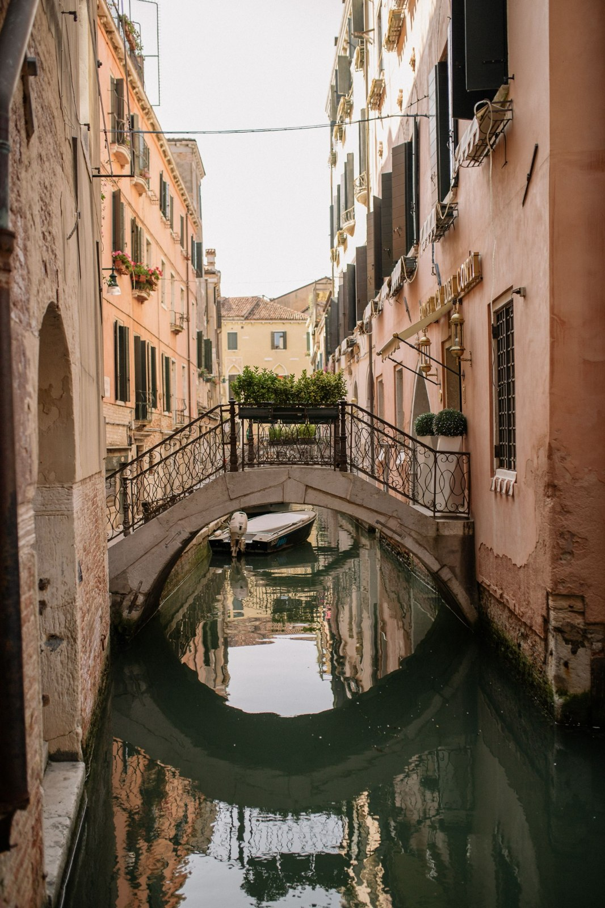
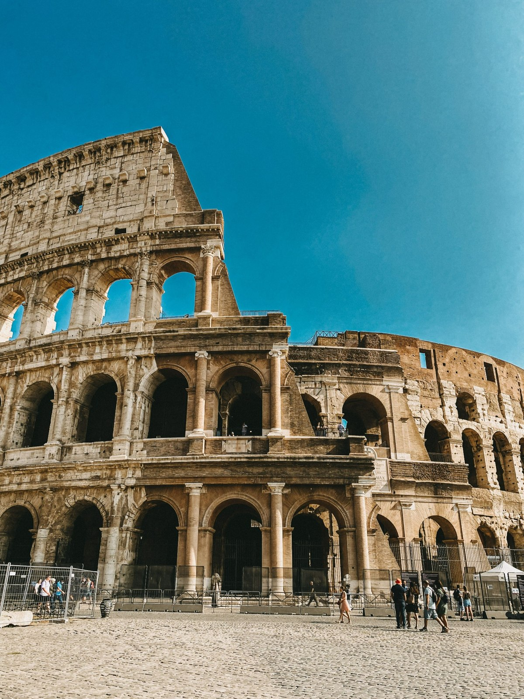
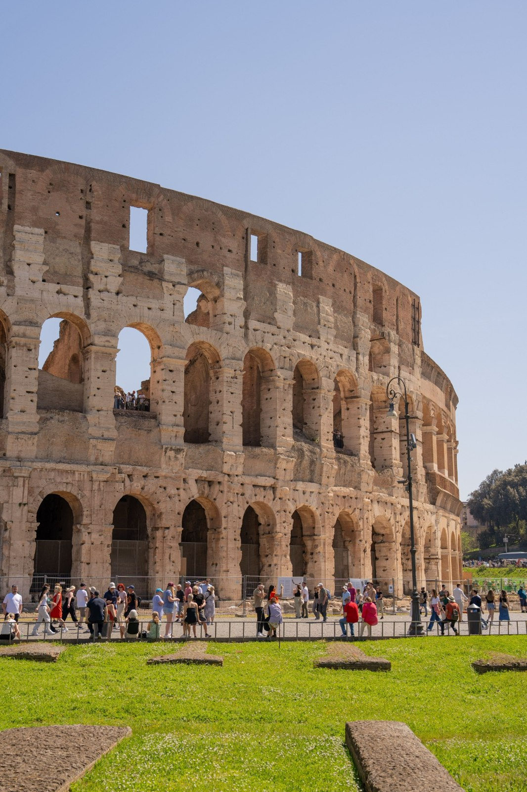
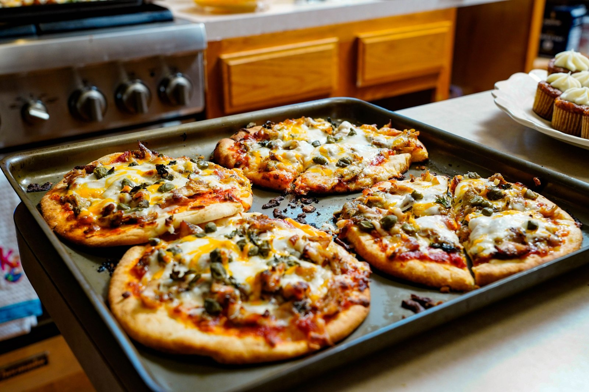

ITALIA / 2026
Фотогалерея Італії
Фотографії міст, архітектури та італійської кухні.






Для перегляду відео: офіційний туристичний канал Italia.it .
Фотографії міст, архітектури та італійської кухні.




Для перегляду відео: офіційний туристичний канал Italia.it .